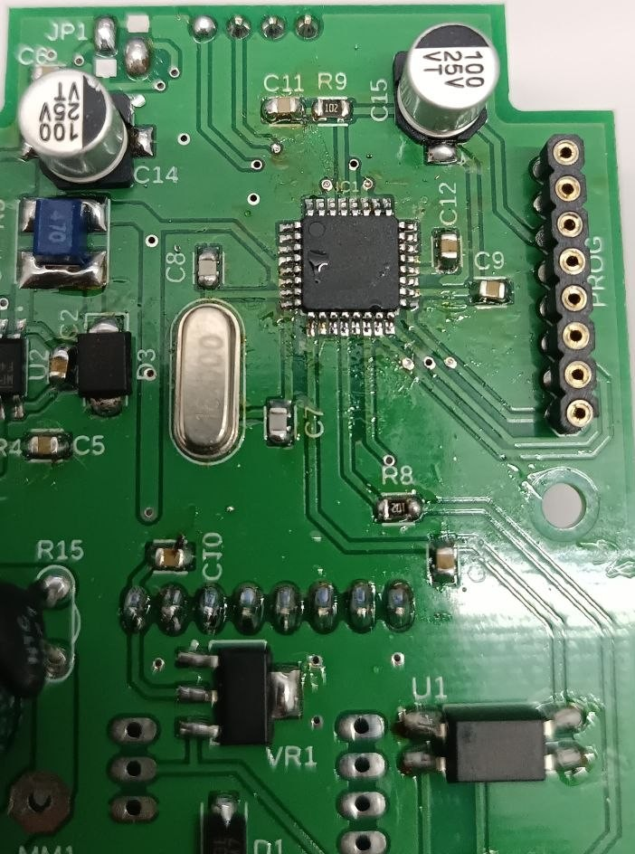
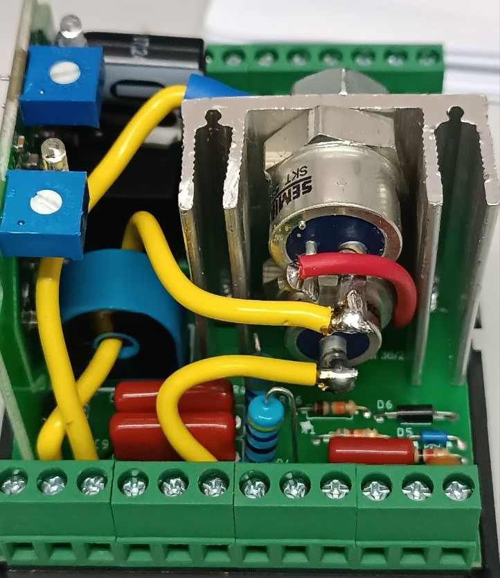
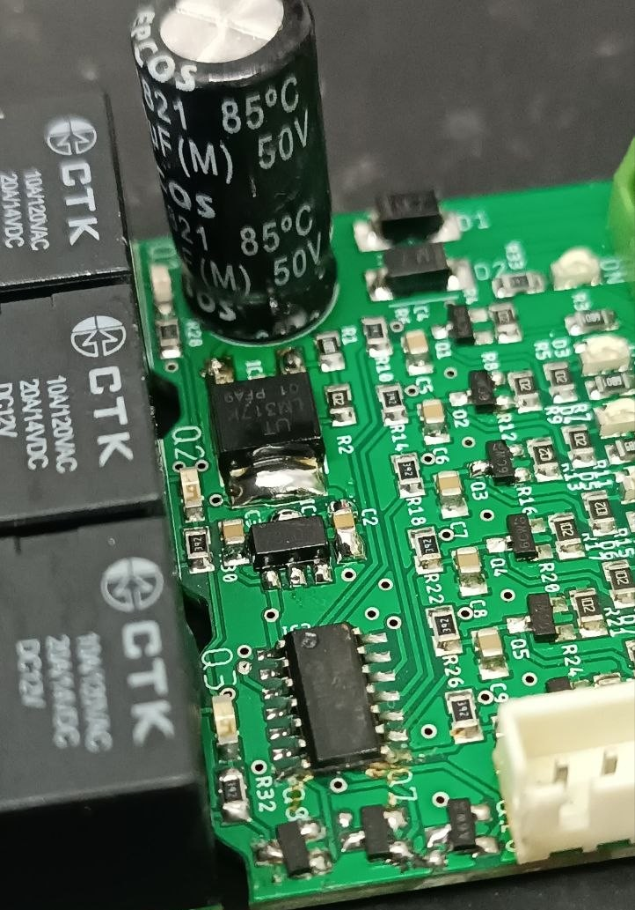

Luiza Oliveira
Sou Técnica em Eletrônica, formada pela Etec Rubens de Faria e Souza, e atualmente curso Desenvolvimento de Software Multiplataforma na Fatec Votorantim. Atuo como Auxiliar em Eletrônica, com experiência em análise, testes, manutenção e suporte técnico de equipamentos eletrônicos. Busco atuar nas áreas de eletrônica e tecnologia, aplicando conhecimentos em diagnóstico de falhas, reparo de equipamentos e desenvolvimento de soluções que contribuam para a melhoria contínua de processos.
Minhas Skills
HTML5
5%
CSS3
5%
JavaScript
0%
Comunicação
90%
Minha Formação
2016 - 2018
E.E Dr. Afonso Vergueiro
Ensino Médio
2024 - 2025
Etec Rubens de Faria e Souza
Técnico em eletrônica
2026 - Cursando
Fatec Benedicto Pagliato - Votorantim
Desenvolvimento de Software Multiplataforma
Meus Projetos

2025
Controlador de Acesso - Access
Projeto desenvolvido no meu local de trabalho, que consiste em um controlador de acesso.
Saiba Mais...
É um dispositivo de acesso operacional desenvolvido para permitir e controlar o acesso de equipamentos fixos e móveis. O dispositivo assegura que a operação seja realizada somente por profissionais autorizados e capacitados, também é possível utilizá-lo para restringir acessos a determinadas áreas e setores. O equipamento é configurado através de um crachá de administrador, que é oferecido com o equipamento. Somente esse crachá permite o cadastro de pessoas habilitadas a operar o equipamento ou acessar a área.

2025
Sistema de Frenagem Inteligente
Projeto desenvolvido no meu local de trabalho, que consiste em um sistema de Frenagem Inteligente para motores industriais.
Saiba Mais...
É um dispositivo eletrônico desenvolvido para reduzir a inércia de equipamentos movidos por motores elétricos. Ele é capaz de frenar motores de 0,25CV à 10 CV. O dispositivo é integrado ao circuito de acionamento através de um contator adicional, cuja função é comutar as fases do motor para o módulo de frenagem durante o processo de parada. O TS Brake possui uma função de monitoramento de eficácia da frenagem e saída do feedback que pode ser interligada ao circuito de segurança do equipamento, assim interrompendo a partida em caso de falha da frenagem. Com um design inovador e compacto o TS Brake é de fácil instalação, não requer alterações mecânicas nos equipamentos, basta ser interligado com o dispositivo de partida dos equipamentos.

2026
Sistema de Intertravamento
Projeto desenvolvido no meu local de trabalho, que consiste em um sistema de Intertravamento para Fresadoras.
Saiba Mais...
Um sistema de intertravamento para fresadora é um mecanismo de segurança que impede o funcionamento da máquina ou o acesso a áreas perigosas enquanto condições de risco estiverem presentes.